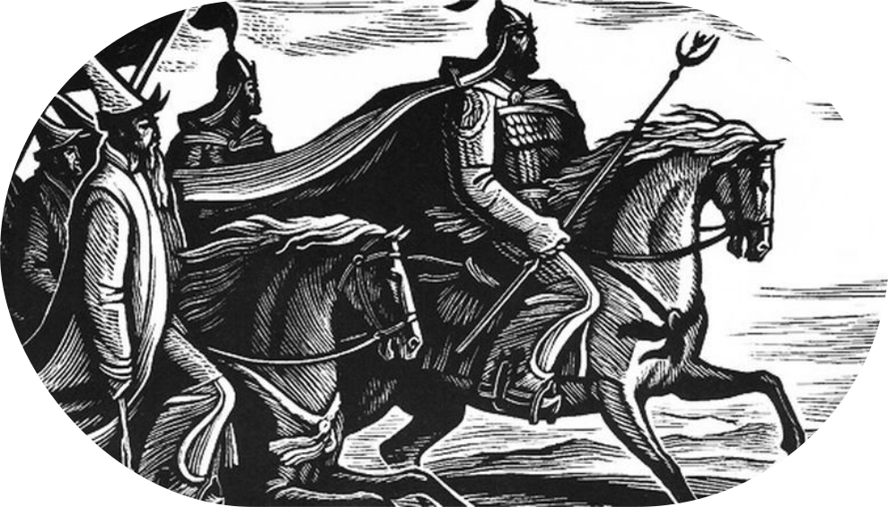

Манас – кыргыз элинин улуу баатыры
Манас – кыргыз элинин биримдигин камсыз кылган, кыргыздардын даңктуу баатыры, дүйнөдөгү эң узун эпостун башкы каарманы. "Манас" эпосу көлөмү боюнча санскриттик "Махабхарата" эпосунан эки эсе узун болуп, ошондой эле тибеттик Гэсэр хандын эпосунан да ашып түшөт. Даңктуу манасчы Саякбай Каралаевден жазылып алынган "Манас" вариантында 500 553 сап ыр камтылган.
"Манас" эпосу дүйнөлүк адабиятта өзгөчө орунга ээ болуп, элдик оозеки чыгармачылыктын эң ири үлгүсү катары таанылат. Бул чыгарма тарыхый чындыктарды жана мифтерди айкалыштырып, кыргыз элинин эң башкы баалуулуктарын – биримдикке умтулуу, эркиндик үчүн күрөшүү, каармандык, берилгендик жана сүйүүнү даңазалайт.
Чыңгыз Айтматов бул улуу чыгарманын баалуулугун мындайча сүрөттөгөн:
"Манас" эпосу – бул эстетикалык генийи менен кыргыз эли жараткан теңдешсиз, мыкты көркөм чыгарма. Ал реалдуу окуялардын, фактылардын, каарман инсандардын негизинде пайда болуп, кылымдан кылымга, манасчылардан манасчыларга өтүп, өркүндөтүлүп, тазаланып, керексиз жүктөн арылып, жаңы маанилүү элементтер менен толукталып, акыры бүгүнкүдөй кемелине жеткен."
Эпос үч негизги бөлүктөн турат:
- Биринчи бөлүк – Манастын өзүнө, анын эрдиктерине, кыргыз урууларын бириктирүү аракетине жана элинин эркиндиги үчүн күрөшүнө арналган.
- Экинчи бөлүк – Манастын уулу Семетей жөнүндө. Анда анын балалык чагы, жетилүүсү жана душмандар менен болгон салгылашуулары баяндалат.
- Үчүнчү бөлүк – Манастын небереси Сейтек тууралуу. Ал өзүнүн баатырдык жолу, душмандар менен күрөшү жана адилеттикти калыбына келтирүү аракеттери жөнүндө баяндайт.
1-бөлүм. Манас – улуу баатыр
Эпостун негизин түзгөн уламыштарга ылайык, кыргыздар кытай аскерлеринин кол салуусунан улам өз жеринен сүрүлүп чыгып, Алтайга көчүп кетишкен. Дал ошол жерде кыргыз элинин улуу баатыры – Манас жарык дүйнөгө келген.
Манас жаш кезинен эле өзгөчө сапаттары менен айырмаланган. Ал теңтуштарынан күч-кубаты, эр жүрөктүүлүгү жана кең пейилдиги менен өзгөчөлөнүп, атагы Алтайдын чегинен алыска тараган. Кытай императору Манастын күчү тууралуу укканда, аны жок кылуу үчүн жоокерлерди жиберет. Бирок Манас душмандарынын колун талкалап, кыргыздарды бириктирип, аларга өз жерин кайтарып берген. Ошентип, Манас кыргыз эли үчүн улуу баатыр гана эмес, бардык уруулардын башын бириктирген, мекенин кайтарып берген легендарлуу лидер болуп калды.

2-бөлүк. Семетей – улуу жоокердин мураскери
Манас өлгөндөн кийин аялы Каныкей уулу Семетей менен жашынууга аргасыз болот. Ал ата-энесине барып, баланы согуштан, түйшүктөн алыс чоңойткон.
Семетей атасынын ким экенин билбей чоңойгон. Бирок чындык ачыкка чыкканда кыргыз жерине кайтып, Манастын өчүн алууну чечет. Ал өзүнө ишенимдүү досторду чогултуп, көптөгөн эрдиктерди жасап, өзүнүн улуу мурасына татыктуу экенин далилдеди.
Бирок кыргыздардын арасында Семетейге каршы кутум уюштурган көрө албас адамдар болгон. Чыккынчылыктын айынан ал көздөн кайым болду.
3-бөлүм. Сейтек – Манастын мурастарынын уландысы
Эпос «Манас» үчүнчү бөлүмүндө Манастын небереси Сейтектин тагдыры тууралуу айтылат. Сейтек атасынын душмандарынан качып чоңойгон, өзүнүн чыныгы келип чыгышын билбей өскөн.
Чындыкты билгенден кийин, ал өзүнүн чоң атасы жана атасынын жолун улантууну чечкен: душмандарды кууп чыгаруу, кыргыздарды бириктирүү жана аларга тынчтык кайтаруу. Узун сынактардан жана жоокердик күрөштөрдөн соң, Сейтек адилеттүүлүктү калыбына келтирип, элди бириктирди.
Эпос «Манас» гана улуу жоокердик күрөш жөнүндө эмес, ошондой эле кыргыз элинин маданий баалуулуктарын да чагылдырат. Анда сүйүү, туруктуулук жана үй-бүлөгө болгон урмат-сый көрсөтүлүп, бул баалуулуктар муундан муунга өтүп келет. Бул чыгарма кыргыз маданиятынын эң маанилүү символу болуп, элдин өткөнүн жана азыркысын бириктирет.

Манастын жети осуяты
Эпос "Манас" кыргыз элинин көчмөн турмушунун энциклопедиясы гана эмес, анын ичинде маанилүү философиялык жана ахлактык принциптер да бар, алар муундан-муунга өтүп келет. Бул принциптер Манастын Жети мурасынын негизинде чагылдырылган, алар кыргыздардын улуттук өзүн-өзү түшүнүүсүнүн негизи болуп саналат:
- Элинин биримдиги жана күчү — эл биримдикте гана бардык сыноолорду жеңе алат.
- Улуттар аралык ынтымак, достук жана кызматташтык — ар бир элдин өкүлдөрүнө урмат көрсөтүү өлкөнү күчтүү кылат.
- Улуттук ар-намыс жана патриоттук — өз мекенине сүйүү жана анын тарыхына урматтоо гүлдөп-өнүгүүгө алып келет.
- Эмгек жана билим аркылуу — элдин өнүгүүсү гана билим жана эмгек аркылуу мүмкүн.
- Гуманизм, жомоктуулук, чыдамдуулук — адилеттүүлүк жана кайрымдуулукка умтулуу коомду гармониялуу кылат.
- Табият менен гармония — айлана-чөйрөгө камкордук кылуу туруктуу келечектин кепили.
- Кыргыз мамлекеттүүлүгүн бекемдөө жана коргоо — көз карандысыздыкты жана улуттук салттарды сактоо ар бир кыргыз үчүн өтө маанилүү милдет болуп калат.
Демек, "Манас" эпосу — бул каармандыктар жөнүндө гана баяндама эмес, ошондой эле кыргыз элинин улуттук рухунун чагылдырылышы. Анда согуштар гана эмес, элдин руханий баалуулуктары да сүрөттөлөт, алар муундан муунга өтүп келе жатат. Манастын Жети мурасы кыргыз маданиятынын эң маанилүү принциптерине айланып, эпос өзүнүн акылмандыгы, баатырдыгы жана биримдик идеясы менен элди шыктандырып келет.